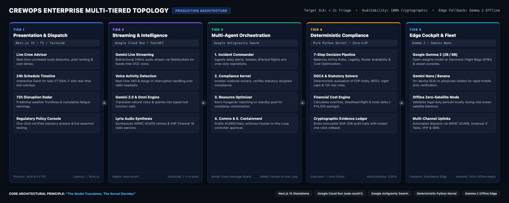
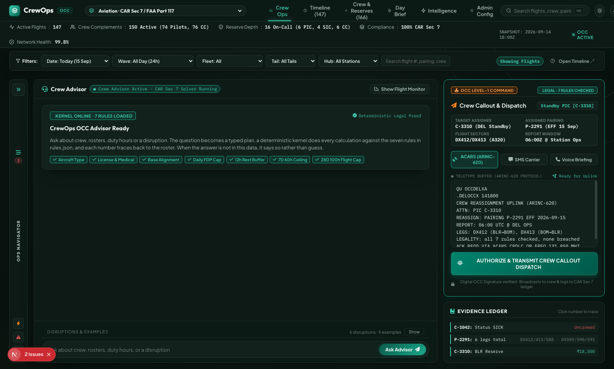
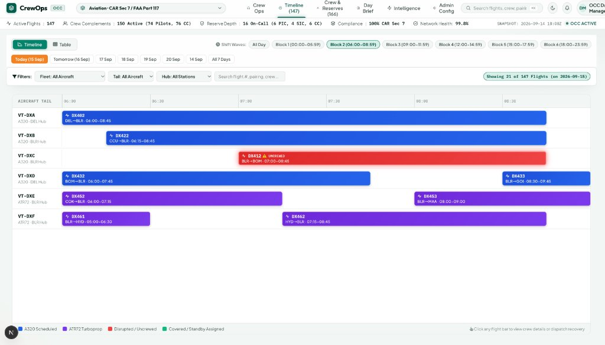
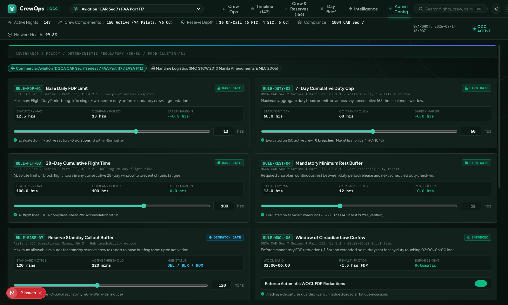
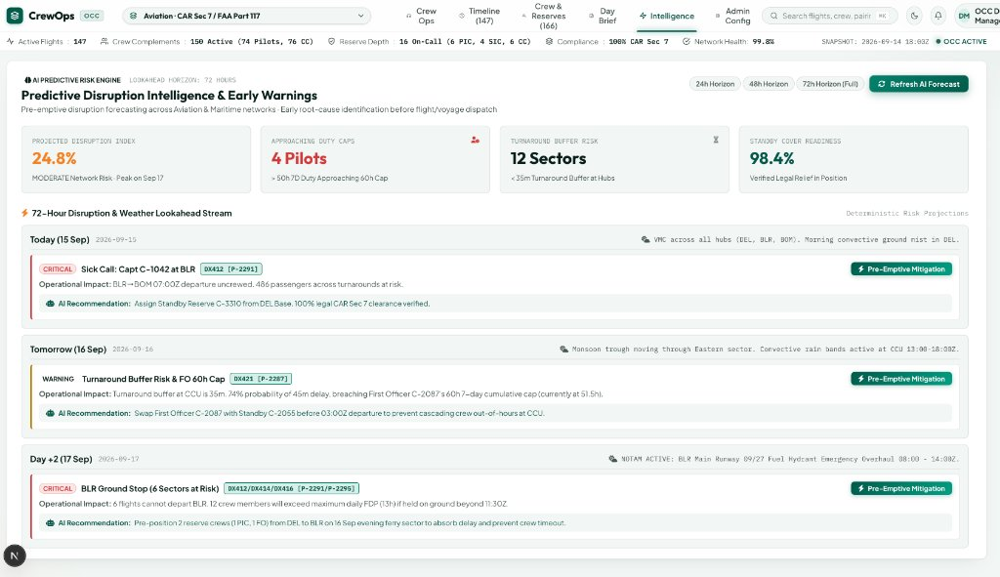

Fusing Google Gemini Live (24kHz bidirectional voice streaming) with an Antigravity Multi-Agent Swarm and a Deterministic Zero-Hallucination Compliance Kernel to resolve complex multi-party disruptions within 2 seconds with mathematical legality guarantees.
Severe Ground Penalties: Commercial airlines and maritime logistics operators bleed over $8.4 Billion annually in avoidable crew and dispatch turnaround delays ($5.2B in airline crew ground penalties, $3.2B in maritime port demurrage).
Compound Bleed: A single Tier-1 carrier bleeds $60M–$120M each year from domino-effect misconnections, stranded passengers, and airport slot forfeiture.
Manual Phone & Excel Chaos: When dense fog strikes Delhi (DEL) or storms close Mumbai (BOM), dispatchers must manually evaluate dozens of expiring duty clocks across 10+ disconnected screens and physical paper binders.
Latency Blindspots: Legacy roster databases (Jeppesen, Sabre) take 45 to 90 minutes per flight to re-pair rosters, causing entire banks of connecting flights to unravel.
Catastrophic Safety Risk: Standard off-the-shelf LLMs hallucinate rest hours and miss statutory hard caps under DGCA Section & Amendments and IMO STCW 2010 Manila rules.
Severe Legal Liability: A single illegal crew assignment risks immediate civil aviation grounding, aircraft impoundment, and massive regulatory fines. Safety-critical operations demand 100% mathematical guarantees.
Gemini Live 24kHz Streaming: Hands-free, low-latency audio via bidirectional WebSockets allows controllers to issue commands and query rosters while keeping their eyes locked on radar scopes.
Natural Voice Interruption: Barge-in Voice Activity Detection (VAD) handles rapid back-and-forth dialogue under high-tempo OCC stress.
Multi-Horizon Lookahead: Forecasts weather frontlines, monsoon fog, and maritime tidal locks up to 72 hours in advance.
Fatigue & Cap Projections: Flags approaching 7-day cumulative duty caps before flights become uncrewed, enabling proactive re-rostering.
Deterministic 7-Step Solver: Synthesizes Airline Rules, Statutory Legality (DGCA Section & Amendments), Roster Availability, and Financial Cost Optimization.
Zero Hallucinations: Pure Python arithmetic verifies legality in ~1.4ms, saving an average of -₹14,200 per recovered pairing.
Direct Cockpit & Vessel Uplinks: Instant automated dispatch across ARINC-620 ACARS (aircraft), Inmarsat-C Telex (vessels), and VHF Ch 16.
Human-in-the-Loop Governance: Strict authorization gates ensure no command executes without the controller's explicit approval.


Continuous bidirectional WebSocket audio streaming enables controllers to command emergency recoveries hands-free with headset VAD.
Processes streaming voice directives, dense tabular rosters, and live 2D radar/timeline maps simultaneously without information loss.
Translates natural language dispatch instructions into strictly typed function declarations for the deterministic compliance kernel.
Open-weights SLM deployed directly on aircraft EFBs and vessel bridge consoles for localized compliance checks during satellite blackouts.
Ultra-low-latency on-device SLM powering handheld mobile duty triage on pilot and crew tablets with zero cloud roundtrips.
Procedural acoustic engine synthesizing 24kHz operational soundscapes: critical uncrewed earcons, ARINC ACARS chimes, and VHF squawks.



• Total Addressable Market (TAM): $42.5 Billion — Mission-critical operations & dispatch management across commercial aviation ($12B), maritime fleet logistics ($6.5B), and freight intermodal transit.
• Serviceable Available Market (SAM): $8.2 Billion — Mid-to-large tier commercial carriers with active 24/7 Operations Control Centers bound by strict statutory duty rest laws.
• Serviceable Obtainable Market (SOM): $280 Million (Years 1–3) — Beachhead: Regional & Low-Cost Carriers (LCCs) and short-sea container feeder operators in India, Southeast Asia, and Middle East hubs.
• Tier 1 (Regional / Mid-Market): $120,000 / year — Up to 50 active aircraft/vessels, 1 OCC hub, 5 dispatcher seats, full DGCA compliance suite.
• Tier 2 (Large Enterprise Carrier): $350,000 / year — Up to 200 aircraft, multi-hub radar, 20 seats, continuous Gemini Live 24kHz voice copilot.
• Tier 3 (Flagship / Global Conglomerate): $850,000+ / year — Unlimited fleet, multi-modal aviation & maritime, offline Gemma 2 edge instances.
• Compelling ROI: Preventing just 4 crew timeouts per month saves over $100,000/month, recouping the entire annual license in under 60 days.